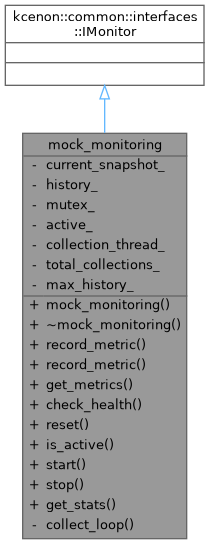
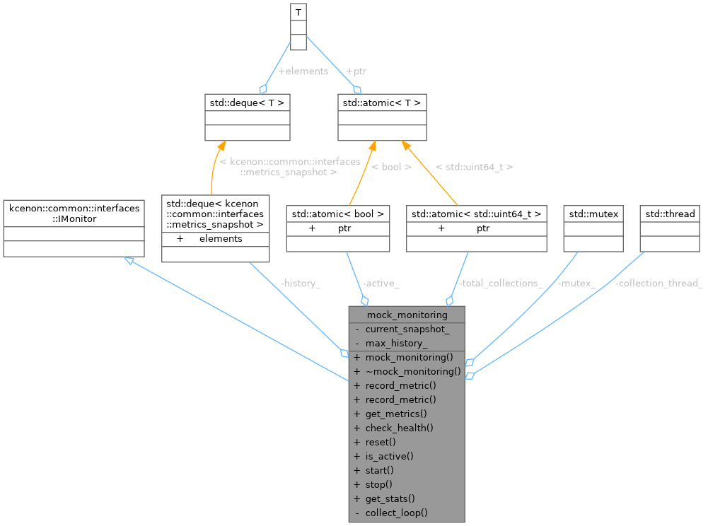
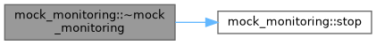
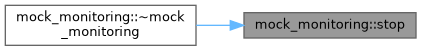

- Generated by
 1.12.0
1.12.0
|
Thread System 0.3.1
High-performance C++20 thread pool with work stealing and DAG scheduling
|
Mock monitoring implementation for demonstration. More...
#include <mock_monitoring.h>


Classes | |
| struct | monitoring_stats |
Public Member Functions | |
| mock_monitoring () | |
| ~mock_monitoring () | |
| kcenon::common::VoidResult | record_metric (const std::string &name, double value) override |
| kcenon::common::VoidResult | record_metric (const std::string &name, double value, const std::unordered_map< std::string, std::string > &tags) override |
| kcenon::common::Result< kcenon::common::interfaces::metrics_snapshot > | get_metrics () override |
| kcenon::common::Result< kcenon::common::interfaces::health_check_result > | check_health () override |
| kcenon::common::VoidResult | reset () override |
| bool | is_active () const |
| void | start () |
| void | stop () |
| monitoring_stats | get_stats () const |
Private Member Functions | |
| void | collect_loop () |
Private Attributes | |
| kcenon::common::interfaces::metrics_snapshot | current_snapshot_ |
| std::deque< kcenon::common::interfaces::metrics_snapshot > | history_ |
| std::mutex | mutex_ |
| std::atomic< bool > | active_ |
| std::thread | collection_thread_ |
| std::atomic< std::uint64_t > | total_collections_ |
| const size_t | max_history_ |
Mock monitoring implementation for demonstration.
In a real application, this would be replaced with: #include <monitoring_system/monitoring.h> using monitoring_module::monitoring;
Definition at line 23 of file mock_monitoring.h.
|
inline |
Definition at line 25 of file mock_monitoring.h.
|
inline |
Definition at line 31 of file mock_monitoring.h.
References stop().

|
inlineoverride |
Definition at line 57 of file mock_monitoring.h.
References active_.
|
inlineprivate |
Definition at line 103 of file mock_monitoring.h.
References active_, current_snapshot_, history_, max_history_, mutex_, and total_collections_.
Referenced by start().
|
inlineoverride |
Definition at line 52 of file mock_monitoring.h.
References current_snapshot_, and mutex_.
|
inline |
Definition at line 98 of file mock_monitoring.h.
References total_collections_.
|
inline |
Definition at line 74 of file mock_monitoring.h.
References active_.
|
inlineoverride |
Definition at line 35 of file mock_monitoring.h.
References current_snapshot_, and mutex_.
|
inlineoverride |
Definition at line 41 of file mock_monitoring.h.
References current_snapshot_, and mutex_.
|
inlineoverride |
Definition at line 66 of file mock_monitoring.h.
References current_snapshot_, history_, mutex_, and total_collections_.
|
inline |
Definition at line 78 of file mock_monitoring.h.
References active_, collect_loop(), and collection_thread_.
|
inline |
Definition at line 85 of file mock_monitoring.h.
References active_, and collection_thread_.
Referenced by ~mock_monitoring().

|
private |
Definition at line 126 of file mock_monitoring.h.
Referenced by check_health(), collect_loop(), is_active(), start(), and stop().
|
private |
Definition at line 127 of file mock_monitoring.h.
|
private |
Definition at line 122 of file mock_monitoring.h.
Referenced by collect_loop(), get_metrics(), record_metric(), record_metric(), and reset().
|
private |
Definition at line 123 of file mock_monitoring.h.
Referenced by collect_loop(), and reset().
|
private |
Definition at line 129 of file mock_monitoring.h.
Referenced by collect_loop().
|
mutableprivate |
Definition at line 124 of file mock_monitoring.h.
Referenced by collect_loop(), get_metrics(), record_metric(), record_metric(), and reset().
|
private |
Definition at line 128 of file mock_monitoring.h.
Referenced by collect_loop(), get_stats(), and reset().